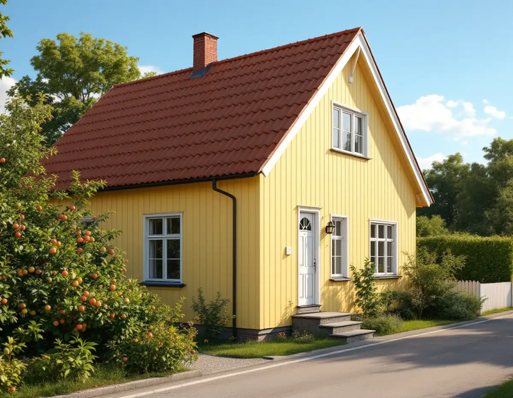
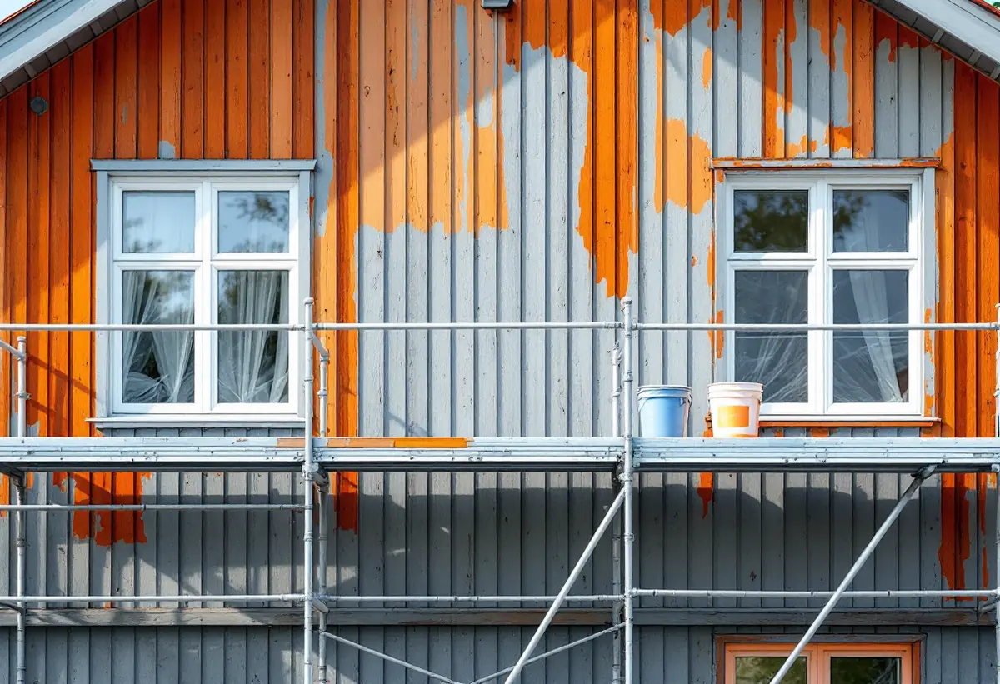
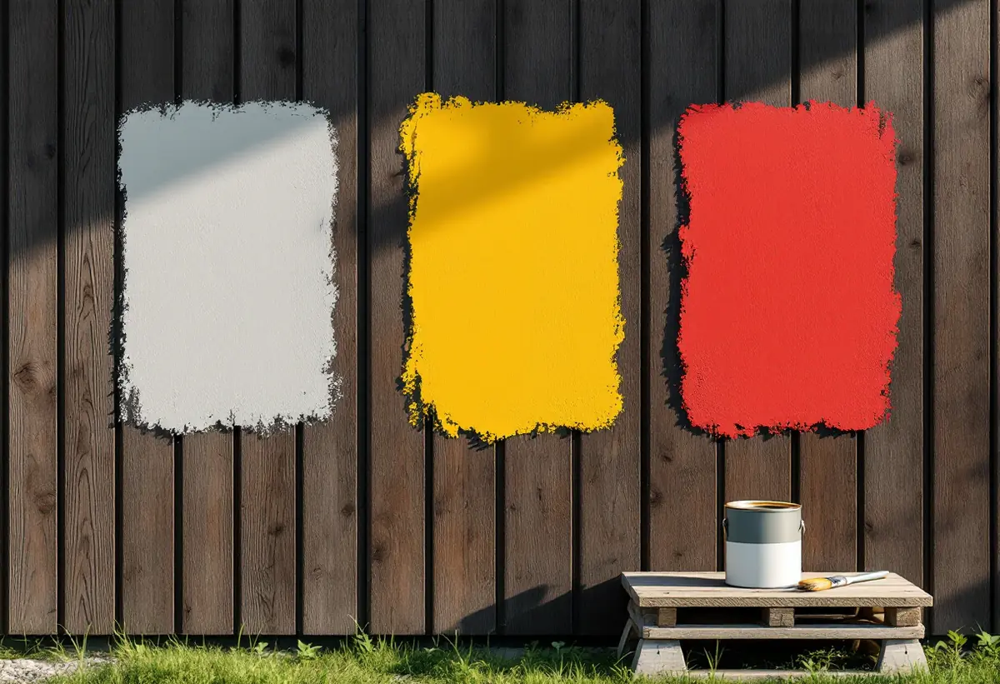

Platsbesök
Vi skrapar fram färglagren på några ställen och tittar på panel, puts och snickerier. Besöket är gratis.

Geal Entreprenad AB målar om träfasader och putsade fasader på villor och radhus i hela Stockholm, med tvätt, skrapning, grundning och två strykningar.
Beskriv jobbet kort.
Något blev fel. Kontrollera uppgifterna eller ring 08 12 410 276.
Vi tittar på jobbet på plats innan du får offert.
Du ser vad som ingår och vad det kostar.
Vi drar av ROT direkt och sköter ansökan.
Geal Entreprenad AB, Bromma. Org.nr 559303-7566.

Du får ett gratis platsbesök och ett skriftligt kostnadsförslag, och ROT-avdraget dras direkt på fakturan. Här ser du vad som ingår, hur arbetet går till, vad priset beror på och vad som gäller för färgtyp, kulör och lov.
Det mesta av en fasadmålning är förarbete. Fasaden tvättas så att smuts, alger och kritande färg försvinner, och sedan får den torka. Lös och flagnande färg skrapas bort för hand, spik som har krupit upp slås i och skadade brädor byts. Bart trä grundas, och därefter stryks fasaden två gånger.
Foder, knutar, vindskivor och takfot hör till fasaden och målas i samma omgång, liksom fönstrens utsidor om du vill. Fönster, mark och planteringar närmast huset täcks under arbetet. Ställning eller lift ingår i kostnadsförslaget, och på höga gavlar är ställningen en förutsättning för att skrapa och måla ordentligt.
Visar det sig vid skrapningen att panelen är rötskadad, eller att putsen har släppt, räcker det inte att måla. Då beskriver vi vad som behöver bytas eller lagas innan färgen läggs på – mer om det finns under fasadrenovering.

Den nya färgen ska passa det som redan sitter på väggen. På en träfasad kan det finnas linoljefärg, alkydoljefärg eller plastfärg i olika lager, och vid platsbesöket skrapar vi fram lagren på några ställen för att se vad vi målar på. Slamfärg, som den röda på ohyvlad panel, är matt, vattenspädbar och fuktgenomsläpplig, och en slamfärgad fasad målas om med slamfärg.
Boverket skriver att akrylatfärg är en tät plastfärg som kräver grundfärg av alkydolja, och att panel där grunden hoppats över har fuktats upp kraftigt av regn. Därför grundar vi bart trä innan täckfärgen läggs på. På hyvlad panel som bär linoljefärg fortsätter vi med linoljefärg. Enligt Riksantikvarieämbetet kan få färgtyper målas i så många skikt utan att den gamla färgen måste tas bort.
En putsad fasad målas med en färg som passar putsen under. Vi tar reda på vilken puts och vilken färg som sitter där i dag innan vi föreslår något, eftersom en tät färg på en puts som behöver andas kan stänga inne fukt.
En kulör ser annorlunda ut på en hel fasad än på en färgkarta. Vi målar därför provytor direkt på huset, gärna i både sol och skugga, och du väljer när du har sett dem i dagsljus. Foder och knutar provas tillsammans med fasadkulören.
Enligt Boverket krävs inget bygglov för att byta kulör på ett en- eller tvåbostadshus, utom där utökad lovplikt gäller. Ligger huset i ett område som kommunen har pekat ut som särskilt värdefullt, eller är byggnaden själv särskilt värdefull, kan lov krävas även för ommålning. Boverket påpekar också att ett byte av färgtyp, till exempel från linoljefärg till plastfärg, kan påverka byggnadens yttre karaktärsdrag.
Reglerna tillämpas av kommunen, och detaljplanen kan ha egna bestämmelser. Är du osäker ger kommunens bygglovsavdelning besked för din fastighet.
Utvändig målning är ett säsongsarbete. Fasaden ska vara torr när den målas, och färgen behöver tid att torka mellan strykningarna. Vi lägger därför arbetet inom säsongen, med marginal för regn och för att en tvättad fasad ska hinna torka innan grundningen.
Väderstrecken behandlas olika. En sydfasad i stark sol torkar fort och målas hellre när solen har gått vidare, medan en nordsida kan behöva längre tid efter tvätten. På en putsad fasad kan ställningen behöva täckas in för att skydda mot slagregn och för snabb uttorkning medan färgen härdar.
När ställningen ändå står runt huset lönar det sig att ta allt som nås från den. Vindskivor, takfot och foder är de delar som är mest utsatta för väder, och de visar ofta skador tidigare än själva panelen. Ändträ nedtill på panelbrädor och knutar suger vatten och grundas därför extra noga.
Fönstrens utsidor kan målas i samma omgång. Har bågarna sprucket kitt eller röta i bottenstyckena räcker det inte med färg, och då beskriver vi vad som behöver göras under fönsterrenovering. Fönsterbleck, stuprör och hängrännor ses över medan de är åtkomliga, och det som ska bytas hör till plåtslagarens arbete.
Vi skriver ut i kostnadsförslaget vilka delar som ingår, så att det inte uppstår frågor om vad som räknas till fasaden.
En målad fasad behöver tillsyn mellan ommålningarna. Gå runt huset en gång om året och titta särskilt på söder- och västsidan, på brädornas nederkanter och på vågräta ytor där vatten blir stående. Små skador som bättras i tid hindrar att vatten tar sig in bakom färgen.
Håll växtlighet och jord borta från panelens nederkant, rensa hängrännorna så att vatten inte rinner över fasaden och tvätta bort alger och smuts med mjuk borste. Linoljefärg kritar och mattas med tiden, vilket är normalt och gör fasaden lätt att måla om utan att all gammal färg behöver tas bort.
Vi skrapar fram färglagren på några ställen och tittar på panel, puts och snickerier. Besöket är gratis.
Förarbete, färgtyp, antal strykningar och ställning står var för sig, med ROT-avdraget uträknat.
Provytor målas på fasaden, och vid behov kontrolleras detaljplanen med kommunen.
Ställningen reses, fasaden tvättas och får torka, och lös färg skrapas bort.
Bart trä grundas och fasaden stryks två gånger i lämpligt väder.
Vi går runt huset med dig, bättrar det som behövs och river ställningen.
Tiden beror på fasadens yta och höjd, hur mycket gammal färg som ska bort och på vädret. Själva strykningarna är den kortaste delen. Mellan tvätt och grundning ska fasaden torka, och mellan strykningarna ska färgen torka, och de pauserna styrs av temperatur och luftfuktighet snarare än av oss.
Tidplanen står i kostnadsförslaget. Regnar det flyttar vi arbetsdagarna i stället för att tumma på kvaliteten – vi målar inte på en blöt fasad för att hålla ett datum.
Skatteverket ger rotavdrag för att måla och rengöra fasaden på ett småhus, och för att montera och montera ned en byggnadsställning i samband med arbetet. Det gäller villor, radhus och fritidshus som du äger. Är radhuset en bostadsrätt ger fasadmålning däremot inget avdrag, eftersom fasaden då är föreningens ansvar.
Avdraget är 30 procent av arbetskostnaden, högst 50 000 kr per person och år och högst 75 000 kr tillsammans med rutavdrag. Färg, material och resor ger inget avdrag. Geal drar avdraget direkt på fakturan och ansöker om utbetalningen hos Skatteverket, så du betalar bara din del.
Vi publicerar inga prislistor för fasadmålning, eftersom förarbetet skiljer mycket mellan två hus av samma storlek. Det som väger tyngst är fasadens yta och höjd, hur mycket gammal färg som måste skrapas bort, om brädor behöver bytas, vilken färgtyp underlaget kräver och hur många foder, knutar, vindskivor och fönster som ska målas. Behovet av ställning eller lift påverkar också.
Efter platsbesöket får du ett skriftligt kostnadsförslag där arbete, material och ställning står var för sig och ROT-avdraget är uträknat. Besöket och kostnadsförslaget är gratis.
Målning inomhus och utomhus.
Målare i Stockholm →Ny panel, puts och tilläggsisolering.
Fasadrenovering i Stockholm →Kitt och linoljefärg på gamla fönster.
Fönsterrenovering i Stockholm →Målning av plåt- och betongtak.
Takmålning →Eller ring 08 12 410 276, mån–fre 08–17.
Beskriv jobbet kort.
Något blev fel. Kontrollera uppgifterna eller ring 08 12 410 276.